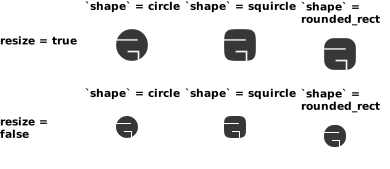
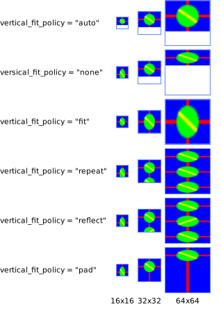
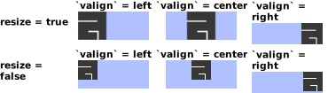
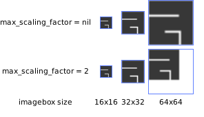
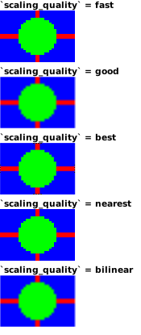

Module: wibox.widget.imagebox
A widget to display image.
The wibox.widget.imagebox is part of the Awesome WM’s wiboxes system (see 03-declarative-layout.md).
This widget displays an image. The image can be a file, a cairo image surface, or an rsvg handle object (see the image property).
Use a wibox.widget.imagebox

local my_imagebox = wibox.widget.imagebox(beautiful.awesome_icon, false)
Alternatively, you can declare the imagebox widget using the declarative pattern (Both codes are strictly equivalent):
local my_imagebox = wibox.widget { image = beautiful.awesome_icon, resize = false, widget = wibox.widget.imagebox }
Class Hierarchy
- gears.object
-
- wibox.widget.base
-
- wibox.widget.imagebox
Info:
- Copyright: 2010 Uli Schlachter
-
Originally authored by: Uli Schlachter
(Full contributors list available on our github project)
Constructors
| wibox.widget.imagebox ([image[, resize_allowed[, clip_shape]]]) | Returns a new wibox.widget.imagebox instance. | |
Object properties
| image | image | The image rendered by the imagebox. | |
| clip_shape | function or gears.shape | Set a clip shape for this imagebox. | |
| resize | boolean | Should the image be resized to fit into the available space? | |
| horizontal_fit_policy | string | Set the horizontal fit policy. | |
| vertical_fit_policy | string | Set the vertical fit policy. | |
| valign | string | The vertical alignment. | |
| halign | string | The horizontal alignment. | |
| max_scaling_factor | number | The maximum scaling factor. | |
| scaling_quality | string | Set the scaling aligorithm. | |
| children | table | Get or set the children elements. | Inherited from wibox.widget.base |
| all_children | table | Get all direct and indirect children widgets. | Inherited from wibox.widget.base |
| forced_height | number or nil | Force a widget height. | Inherited from wibox.widget.base |
| forced_width | number or nil | Force a widget width. | Inherited from wibox.widget.base |
| opacity | number | The widget opacity (transparency). | Inherited from wibox.widget.base |
| visible | boolean | The widget visibility. | Inherited from wibox.widget.base |
| buttons | table | The widget buttons. | Inherited from wibox.widget.base |
Object methods
| :add_button (button) | Add a new awful.button to this widget. | Inherited from wibox.widget.base |
| :emit_signal_recursive (signal_name, ...) | Emit a signal and ensure all parent widgets in the hierarchies also forward the signal. | Inherited from wibox.widget.base |
| :index (widget[, recursive[, ...]]) -> (number, widget, table) | Get the index of a widget. | Inherited from wibox.widget.base |
| :connect_signal (name, func) | Connect to a signal. | Inherited from gears.object |
| :weak_connect_signal (name, func) | Connect to a signal weakly. | Inherited from gears.object |
| :disconnect_signal (name, func) | Disonnect from a signal. | Inherited from gears.object |
| :emit_signal (name, ...) | Emit a signal. | Inherited from gears.object |
Signals
| widget::layout_changed | When the layout (size) change. | Inherited from wibox.widget.base |
| widget::redraw_needed | When the widget content changed. | Inherited from wibox.widget.base |
| button::press | When a mouse button is pressed over the widget. | Inherited from wibox.widget.base |
| button::release | When a mouse button is released over the widget. | Inherited from wibox.widget.base |
| mouse::enter | When the mouse enter a widget. | Inherited from wibox.widget.base |
| mouse::leave | When the mouse leave a widget. | Inherited from wibox.widget.base |
Constructors
- wibox.widget.imagebox ([image[, resize_allowed[, clip_shape]]])
-
Returns a new wibox.widget.imagebox instance.
This is the constructor of wibox.widget.imagebox. It creates a new instance of imagebox widget.
Alternatively, the declarative layout syntax can handle wibox.widget.imagebox instanciation.
The image can be a file, a cairo image surface, or an rsvg handle object (see the image property).
Any additional arguments will be passed to the clip shape function.
Parameters:
- image
image
The image to display (may be
nil). (optional) - resize_allowed
boolean
If
false, the image will be clipped, else it will be resized to fit into the available space. (optional) - clip_shape function A gears.shape compatible function. (optional)
Returns:
-
wibox.widget.imagebox
A new wibox.widget.imagebox widget instance.
- image
image
The image to display (may be
Object properties
- image image · 1 signal
-
The image rendered by the imagebox.
It can can be any of the following:
- A string : Interpreted as the path to an image file,
- A cairo image surface : Directly used as is,
- An rsvg handle object : Directly used as is,
nil: Unset the image.
Type constraints:
- image image The image to render.
See also:
Click to display more Emit signals:
property::imageWhen the image value changes.selfwibox.widget.imagebox The object which changed (useful when connecting many object to the same callback).
- clip_shape function or gears.shape · 1 signal
-
Set a clip shape for this imagebox.
A clip shape define an area where the content is displayed and one where it
is trimmed.

Type constraints:
- clip_shape function or gears.shape A gears.shape compatible shape function.
See also:
Usage:
for _, resize in ipairs {true, false} do for idx, shape in ipairs {gears.shape.circle, gears.shape.squircle, gears.shape.rounded_rect} do local w = wibox.widget { { { image = beautiful.awesome_icon, forced_height = 32, forced_width = 32, clip_shape = shape, resize = resize, widget = wibox.widget.imagebox }, widget = wibox.container.place }, widget = wibox.container.background } end end
Click to display more Emit signals:
property::clip_shapeWhen the clip_shape value changes.selfwibox.widget.imagebox The object which changed (useful when connecting many object to the same callback).new_valueclip_shape The new value affected to the property.
- resize boolean · 1 signal
-
Should the image be resized to fit into the available space?

Click to display more Emit signals:
property::resizeWhen the resize value changes.selfwibox.widget.imagebox The object which changed (useful when connecting many object to the same callback).new_valueresize The new value affected to the property.
- horizontal_fit_policy string · 1 signal
-
Set the horizontal fit policy.
Values are:
- auto: Honor the resize varible and preserve the aspect ratio (default).
- none: Do not resize at all.
- fit: Resize to the widget width.
Here is the result for a 22x32 image:
See also:
Click to display more Emit signals:
property::horizontal_fit_policyWhen the horizontal_fit_policy value changes.selfwibox.widget.imagebox The object which changed (useful when connecting many object to the same callback).new_valuehorizontal_fit_policy The new value affected to the property.
- vertical_fit_policy string · 1 signal
-
Set the vertical fit policy.
Values are:
- auto: Honor the resize varible and preserve the aspect ratio (default).
- none: Do not resize at all.
- fit: Resize to the widget height.
Here is the result for a 32x22 image:

See also:
Click to display more Emit signals:
property::vertical_fit_policyWhen the vertical_fit_policy value changes.selfwibox.widget.imagebox The object which changed (useful when connecting many object to the same callback).new_valuehorizontal_fit_policy The new value affected to the property.
- valign string · 1 signal
-
The vertical alignment.
Possible values are:
- top
- center (default)
- bottom
See also:
Usage:
for _, resize in ipairs {true, false} do for _, valign in ipairs {'top', 'center', 'bottom'} do local w = wibox.widget { { { image = beautiful.awesome_icon, forced_height = 32, forced_width = 32, valign = valign, resize = resize, widget = wibox.widget.imagebox }, bg = beautiful.bg_normal, widget = wibox.container.background }, widget = wibox.container.place } end end
Click to display more Emit signals:
property::valignWhen the valign value changes.selfwibox.widget.imagebox The object which changed (useful when connecting many object to the same callback).new_valueavlignThe new value affected to the property.
- halign string · 1 signal
-
The horizontal alignment.
Possible values are:
- left
- center (default)
- right

See also:
Usage:
for _, resize in ipairs {true, false} do for _, halign in ipairs {'left', 'center', 'right'} do local w = wibox.widget { { { image = beautiful.awesome_icon, forced_height = 32, forced_width = 32, halign = halign, resize = resize, widget = wibox.widget.imagebox }, bg = beautiful.bg_normal, widget = wibox.container.background }, widget = wibox.container.place } end end
Click to display more Emit signals:
property::halignWhen the halign value changes.selfwibox.widget.imagebox The object which changed (useful when connecting many object to the same callback).new_valuehalign The new value affected to the property.
- max_scaling_factor number · 1 signal
-
The maximum scaling factor.
If an image is scaled too much, it gets very blurry. This property allows to limit the scaling. Use the valign and halign to control how the image will be aligned.
In the example below, the original size is 22x22

See also:
Click to display more Emit signals:
property::max_scaling_factorWhen the max_scaling_factor value changes.selfwibox.widget.imagebox The object which changed (useful when connecting many object to the same callback).new_valuemax_scaling_factor The new value affected to the property.
- scaling_quality string · 1 signal
-
Set the scaling aligorithm.
Depending on how the image is used, what is the “correct” way to scale can change. For example, upscaling a pixel art image should not make it blurry. However, scaling up a photo should not make it blocky.
Value Description fast A high-performance filter good A reasonable-performance filter best The highest-quality available nearest Nearest-neighbor filtering (blocky) bilinear Linear interpolation in two dimensions The image used in the example below has a resolution of 32x22 and is intentionally blocky to highlight the difference. It is zoomed by a factor of 3.

Type constraints:
- scaling_quality
string
Either
fast,good,best,nearestorbilinear.
See also:
Usage:
for _, quality in ipairs {'fast', 'good', 'best', 'nearest', 'bilinear'} do local w = wibox.widget { { { image = img, forced_height = 64, forced_width = 96, scaling_quality = quality, widget = wibox.widget.imagebox }, widget = wibox.container.place }, widget = wibox.container.background } end
Click to display more Emit signals:
property::scaling_qualityWhen the scaling_quality value changes.selfwibox.widget.imagebox The object which changed (useful when connecting many object to the same callback).new_valuescaling_quality The new value affected to the property.
- scaling_quality
string
Either
- children table · Inherited from wibox.widget.base
-
Get or set the children elements.
Type constraints:
- children table The children.
- all_children table · Inherited from wibox.widget.base
-
Get all direct and indirect children widgets.
This will scan all containers recursively to find widgets
Warning: This method it prone to stack overflow if there is a loop in the
widgets hierarchy. A hierarchy loop is when a widget, or any of its
children, contain (directly or indirectly) itself.
Type constraints:
- children table The children.
- forced_height number or nil · Inherited from wibox.widget.base
-
Force a widget height.
Type constraints:
- height
number or nil
The height (
nilfor automatic)
- height
number or nil
The height (
- forced_width number or nil · Inherited from wibox.widget.base
-
Force a widget width.
Type constraints:
- width
number or nil
The width (
nilfor automatic)
- width
number or nil
The width (
- opacity number · Inherited from wibox.widget.base
-
The widget opacity (transparency).
Type constraints:
- opacity number The opacity (between 0 and 1) (default 1)
- visible boolean · Inherited from wibox.widget.base
- The widget visibility.
- buttons table · Inherited from wibox.widget.base
-
The widget buttons.
The table contains a list of awful.button objects.
See also:
Object methods
- :add_button (button) · Inherited from wibox.widget.base
-
Add a new awful.button to this widget.
Parameters:
- button awful.button The button to add.
- :emit_signal_recursive (signal_name, ...) · Inherited from wibox.widget.base
-
Emit a signal and ensure all parent widgets in the hierarchies also forward the signal.
This is useful to track signals when there is a dynamic set of containers and layouts wrapping the widget.
Note that this function has some flaws:
- The signal is only forwarded once the widget tree has been built. This happens after all currently scheduled functions have been executed. Therefore, it will not start to work right away.
- In case the widget is present multiple times in a single widget tree, this function will also forward the signal multiple times (once per upward tree path).
- If the widget is removed from the widget tree, the signal is still forwarded for some time, similar to the first case.
Parameters:
- signal_name string
- ... Other arguments
- :index (widget[, recursive[, ...]]) -> (number, widget, table) · Inherited from wibox.widget.base
-
Get the index of a widget.
Parameters:
- widget widget The widget to look for.
- recursive boolean Recursively check accross the sub-widgets hierarchy. (optional)
- ... widget Additional widgets to add at the end of the sub-widgets hierarchy “path”. (optional)
Returns:
- number The widget index.
- widget The parent widget.
- table The hierarchy path between “self” and “widget”.
- :connect_signal (name, func) · Inherited from gears.object
-
Connect to a signal.
Usage example output:
In slot [obj] nil nil nil In slot [obj] foo bar 42Parameters:
- name string The name of the signal.
- func function The callback to call when the signal is emitted.
Usage:
local o = gears.object{} -- Function can be attached to signals local function slot(obj, a, b, c) print('In slot', obj, a, b, c) end o:connect_signal('my_signal', slot) -- Emitting can be done without arguments. In that case, the object will be -- implicitly added as an argument. o:emit_signal 'my_signal' -- It is also possible to add as many random arguments are required. o:emit_signal('my_signal', 'foo', 'bar', 42) -- Finally, to allow the object to be garbage collected (the memory freed), it -- is necessary to disconnect the signal or use
weak_connect_signalo:disconnect_signal('my_signal', slot) -- This time, theslotwont be called as it is no longer connected. o:emit_signal 'my_signal' - :weak_connect_signal (name, func) · Inherited from gears.object
-
Connect to a signal weakly.
This allows the callback function to be garbage collected and automatically disconnects the signal when that happens. Warning: Only use this function if you really, really, really know what you are doing.
Parameters:
- name string The name of the signal.
- func function The callback to call when the signal is emitted.
- :disconnect_signal (name, func) · Inherited from gears.object
-
Disonnect from a signal.
Parameters:
- name string The name of the signal.
- func function The callback that should be disconnected.
- :emit_signal (name, ...) · Inherited from gears.object
-
Emit a signal.
Parameters:
- name string The name of the signal
- ... Extra arguments for the callback functions. Each connected function receives the object as first argument and then any extra arguments that are given to emit_signal()
Signals
- widget::layout_changed · Inherited from wibox.widget.base
-
When the layout (size) change.
This signal is emitted when the previous results of
:layout()and:fit()are no longer valid. Unless this signal is emitted,:layout()and:fit()must return the same result when called with the same arguments.See also:
- widget::redraw_needed · Inherited from wibox.widget.base
-
When the widget content changed.
This signal is emitted when the content of the widget changes. The widget will
be redrawn, it is not re-layouted. Put differently, it is assumed that
:layout()and:fit()would still return the same results as before.See also:
- button::press · Inherited from wibox.widget.base
-
When a mouse button is pressed over the widget.
Arguments:
- self table The current object instance itself.
- lx number The horizontal position relative to the (0,0) position in the widget.
- ly number The vertical position relative to the (0,0) position in the widget.
- button number The button number.
- mods table The modifiers (mod4, mod1 (alt), Control, Shift)
- find_widgets_result The entry from the result of
wibox.drawable:find_widgets for the position that the mouse hit.
- drawable wibox.drawable The drawable containing the widget.
- widget widget The widget being displayed.
- hierarchy wibox.hierarchy The hierarchy managing the widget’s geometry.
- x number An approximation of the X position that the widget is visible at on the surface.
- y number An approximation of the Y position that the widget is visible at on the surface.
- width number An approximation of the width that the widget is visible at on the surface.
- height number An approximation of the height that the widget is visible at on the surface.
- widget_width number The exact width of the widget in its local coordinate system.
- widget_height number The exact height of the widget in its local coordinate system.
See also:
- button::release · Inherited from wibox.widget.base
-
When a mouse button is released over the widget.
Arguments:
- self table The current object instance itself.
- lx number The horizontal position relative to the (0,0) position in the widget.
- ly number The vertical position relative to the (0,0) position in the widget.
- button number The button number.
- mods table The modifiers (mod4, mod1 (alt), Control, Shift)
- find_widgets_result The entry from the result of
wibox.drawable:find_widgets for the position that the mouse hit.
- drawable wibox.drawable The drawable containing the widget.
- widget widget The widget being displayed.
- hierarchy wibox.hierarchy The hierarchy managing the widget’s geometry.
- x number An approximation of the X position that the widget is visible at on the surface.
- y number An approximation of the Y position that the widget is visible at on the surface.
- width number An approximation of the width that the widget is visible at on the surface.
- height number An approximation of the height that the widget is visible at on the surface.
- widget_width number The exact width of the widget in its local coordinate system.
- widget_height number The exact height of the widget in its local coordinate system.
See also:
- mouse::enter · Inherited from wibox.widget.base
-
When the mouse enter a widget.
Arguments:
- self table The current object instance itself.
- find_widgets_result The entry from the result of
wibox.drawable:find_widgets for the position that the mouse hit.
- drawable wibox.drawable The drawable containing the widget.
- widget widget The widget being displayed.
- hierarchy wibox.hierarchy The hierarchy managing the widget’s geometry.
- x number An approximation of the X position that the widget is visible at on the surface.
- y number An approximation of the Y position that the widget is visible at on the surface.
- width number An approximation of the width that the widget is visible at on the surface.
- height number An approximation of the height that the widget is visible at on the surface.
- widget_width number The exact width of the widget in its local coordinate system.
- widget_height number The exact height of the widget in its local coordinate system.
See also:
- mouse::leave · Inherited from wibox.widget.base
-
When the mouse leave a widget.
Arguments:
- self table The current object instance itself.
- find_widgets_result The entry from the result of
wibox.drawable:find_widgets for the position that the mouse hit.
- drawable wibox.drawable The drawable containing the widget.
- widget widget The widget being displayed.
- hierarchy wibox.hierarchy The hierarchy managing the widget’s geometry.
- x number An approximation of the X position that the widget is visible at on the surface.
- y number An approximation of the Y position that the widget is visible at on the surface.
- width number An approximation of the width that the widget is visible at on the surface.
- height number An approximation of the height that the widget is visible at on the surface.
- widget_width number The exact width of the widget in its local coordinate system.
- widget_height number The exact height of the widget in its local coordinate system.
See also: